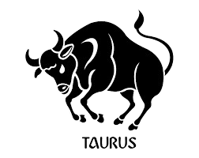

Info: Ο Ταύρος (♉) είναι αστρολογικό ζώδιο που συνδέεται με τον αστερισμό του Ταύρου. Ο Ταύρος συμβολίζει δύναμη και γονιμότητα .
Είναι το πρώτο κατά σειρά από τα ζώδια της Γης και ανήκει στον Σταθερό σταυρό. Σύμφωνα με τον τροπικό ζωδιακό, ο Ταύρος καταλαμβάνεται από τον Ήλιο από 21 Απριλίου μέχρι 20 Μαΐου.
Στον αστρικό ζωδιακό, ο αστερισμός καταλαμβάνεται κατά την περίοδο από 16 Μαΐου έως 15 Ιουνίου. Το ζώδιο απέναντι από τον Ταύρο είναι ο Σκορπιός.
Πιο αναλυτικά τα βασικά χαρακτηριστικά του Ταύρου:
Ημερομηνίες:
21 Απριλίου – 20 Μαΐου
Στοιχείο:
Γη (Πρακτικός )
Ποιότητα:
Σταθερό (Αξιόπιστος,Υπομονετικός)
Κυβερνήτης Πλανήτης:
Αφροδίτη (πλανήτης της ομορφιάς, της αγάπης και της αρμονίας)
Αντίθετο Ζώδιο:
Σκορπιός
Θετικά:
Σταθερός , Αξιόπιστος , Υπομονετικός
Αρνητικά:
Πεισματάρης, Κτητικός , Ζηλιάρης

Χαρακτηριστικά & Προσωπικότητα του Ταύρου
Ο Ταύρος είναι ένα ζώδιο που ξεχωρίζει για τη σταθερότητα, την υπομονή και την έντονη ανάγκη του για ασφάλεια και άνεση. Από τα βασικά χαρακτηριστικά του είναι η επιμονή, η πρακτικότητα και η αγάπη του για τις απολαύσεις της ζωής, όπως το καλό φαγητό, η φύση και η ηρεμία. Δεν βιάζεται εύκολα και προτιμά να χτίζει τη ζωή του με σταθερά και σίγουρα βήματα.
Το ζώδιο αυτό ανήκει στο στοιχείο της γης, κάτι που τον κάνει προσγειωμένο, ρεαλιστή και ιδιαίτερα αξιόπιστο. Οι Ταύροι χρειάζονται σταθερότητα σε όλους τους τομείς της ζωής τους και αποφεύγουν τις απότομες αλλαγές που τους προκαλούν ανασφάλεια.
Η προσωπικότητα του Ταύρου χαρακτηρίζεται από επιμονή, αφοσίωση και πρακτική σκέψη. Είναι άνθρωπος που όταν βάλει έναν στόχο, τον ακολουθεί μέχρι τέλους, χωρίς να τα παρατά εύκολα. Παρόλο που μπορεί να φαίνεται πεισματάρης, είναι ιδιαίτερα σταθερός και αξιόπιστος σε σχέσεις και συνεργασίες.
Στην προσωπικότητά του κυριαρχεί η ανάγκη για ασφάλεια, σταθερότητα και υλική αλλά και συναισθηματική άνεση. Προτιμά ένα ήρεμο περιβάλλον όπου μπορεί να νιώθει σιγουριά και να απολαμβάνει τους καρπούς των προσπαθειών του.
Καριέρα & Στοιχείο Ταύρου
Στην καριέρα, ο Ταύρος αποδίδει εξαιρετικά σε επαγγέλματα που απαιτούν σταθερότητα, επιμονή και πρακτική σκέψη. Μπορεί να διακριθεί σε τομείς όπως τα οικονομικά, η γεωργία, η αρχιτεκτονική, η τέχνη, η μαγειρική και γενικά σε επαγγέλματα που προσφέρουν σταθερό εισόδημα και ασφάλεια.
Η μεθοδικότητά του τον βοηθά να ολοκληρώνει δύσκολες εργασίες με υπομονή, ενώ η αξιοπιστία του τον κάνει πολύτιμο σε κάθε επαγγελματικό περιβάλλον.
Ο Ταύρος ανήκει στο στοιχείο της γης, το οποίο σχετίζεται με τη σταθερότητα, την πρακτικότητα και την υλική ασφάλεια. Αυτό το στοιχείο τον κάνει προσγειωμένο, υπομονετικό και ικανό να χτίζει μακροχρόνιες και σταθερές βάσεις στη ζωή του.
Συμβατότητα & Σχέσεις Ταύρου
Όσον αφορά τη συμβατότητα, ο Ταύρος ταιριάζει ιδιαίτερα με ζώδια της γης, όπως η Παρθένος και ο Αιγόκερως, καθώς μοιράζονται κοινές αξίες σταθερότητας, ασφάλειας και πρακτικότητας. Επίσης, έχει πολύ καλή χημεία με ζώδια του νερού, όπως ο Καρκίνος και οι Ιχθύες, τα οποία του προσφέρουν συναισθηματικό βάθος και τρυφερότητα.
Οι σχέσεις του Ταύρου βασίζονται στην εμπιστοσύνη, τη σταθερότητα και την αφοσίωση. Δεν βιάζεται να δεθεί, αλλά όταν το κάνει, παραμένει πιστός και σταθερός για πολύ μεγάλο χρονικό διάστημα. Χρειάζεται έναν σύντροφο που να του προσφέρει ασφάλεια και ηρεμία.
Στον έρωτα είναι τρυφερός, ρομαντικός και ιδιαίτερα δοτικός. Δίνει μεγάλη σημασία στη σωματική και συναισθηματική επαφή και απολαμβάνει τις ήρεμες, σταθερές σχέσεις. Για να λειτουργήσει μια σχέση μαζί του, χρειάζεται εμπιστοσύνη, υπομονή και συναισθηματική σταθερότητα.
Συχνές Ερωτήσεις για τον Ταύρο (FAQ)
❓ Ποια είναι τα βασικά χαρακτηριστικά του Ταύρου;
Ο Ταύρος είναι ένα από τα πιο σταθερά και αξιόπιστα ζώδια του ζωδιακού κύκλου. Ανήκει στο στοιχείο της Γης, γεγονός που τον κάνει πρακτικό, προσγειωμένο και ιδιαίτερα υπομονετικό. Οι άνθρωποι που έχουν γεννηθεί κάτω από αυτό το ζώδιο χαρακτηρίζονται από επιμονή, εργατικότητα και αφοσίωση στους στόχους τους. Ο Ταύρος αγαπά την ασφάλεια, την άνεση και την οικονομική σταθερότητα, ενώ αποφεύγει τις απότομες αλλαγές και τις βιαστικές αποφάσεις. Παράλληλα, διαθέτει έντονη αισθητική και εκτιμά την ομορφιά, την τέχνη και τις απολαύσεις της ζωής. Αν και μπορεί να φαίνεται ήρεμος και συγκρατημένος, όταν αποφασίσει κάτι είναι πολύ δύσκολο να αλλάξει γνώμη, γεγονός που τον καθιστά ιδιαίτερα πεισματάρη αλλά και αξιόπιστο.
❓ Είναι ο Ταύρος καλός στα οικονομικά;
Ο Ταύρος θεωρείται από τα ζώδια με την καλύτερη διαχείριση χρημάτων και οικονομικών πόρων. Ως ζώδιο της Γης, χαρακτηρίζεται από πρακτικότητα, υπομονή και ανάγκη για οικονομική ασφάλεια. Συνήθως αποφεύγει τα μεγάλα ρίσκα και προτιμά να χτίζει σταθερά την οικονομική του κατάσταση μέσα από σκληρή δουλειά, προγραμματισμό και συνέπεια. Οι περισσότεροι Ταύροι διαθέτουν καλή αίσθηση της αξίας των χρημάτων και προσπαθούν να δημιουργήσουν αποταμιεύσεις και σταθερές πηγές εισοδήματος. Παρόλο που αγαπούν την πολυτέλεια, την άνεση και τα ποιοτικά αγαθά, σπάνια ξοδεύουν παρορμητικά χωρίς να έχουν προηγουμένως σκεφτεί τις συνέπειες. Η επιμονή, η εργατικότητα και η υπομονή τους τούς βοηθούν συχνά να επιτύχουν οικονομική σταθερότητα και μακροπρόθεσμη ασφάλεια.
❓ Είναι ο Ταύρος ζηλιάρης και κτητικός στις σχέσεις;
Ο Ταύρος μπορεί να εμφανίσει τάσεις ζήλιας ή κτητικότητας, ιδιαίτερα όταν αισθανθεί ότι απειλείται η συναισθηματική του ασφάλεια. Αυτό δεν συμβαίνει επειδή επιθυμεί να ελέγχει τον σύντροφό του, αλλά επειδή επενδύει βαθιά στις σχέσεις του και φοβάται την απώλεια ή την προδοσία. Όταν αγαπά, είναι ιδιαίτερα πιστός, αφοσιωμένος και προστατευτικός, περιμένοντας την ίδια στάση και από το άλλο άτομο. Αν νιώσει ανασφάλεια ή αμφιβολία, μπορεί να γίνει πιο επιφυλακτικός ή πεισματάρης. Ωστόσο, όταν υπάρχει αμοιβαία εμπιστοσύνη, ο Ταύρος αποδεικνύεται ένας από τους πιο σταθερούς και αξιόπιστους συντρόφους του ζωδιακού κύκλου, προσφέροντας ασφάλεια, τρυφερότητα και μακροχρόνια αφοσίωση.
❓ Ποια επαγγέλματα ταιριάζουν περισσότερο στον Ταύρο;
Ο Ταύρος αποδίδει καλύτερα σε επαγγέλματα που προσφέρουν σταθερότητα, οικονομική ασφάλεια και δυνατότητα εξέλιξης μέσα από σκληρή δουλειά και συνέπεια. Χάρη στην υπομονή, την πρακτικότητα και την οργανωτικότητά του, μπορεί να διακριθεί σε τομείς όπως τα οικονομικά, η διοίκηση επιχειρήσεων, η λογιστική, η τραπεζική και οι επενδύσεις. Παράλληλα, η αγάπη του για την αισθητική και την ποιότητα τον κάνει ιδιαίτερα ικανό σε επαγγέλματα που σχετίζονται με τη διακόσμηση, τη μόδα, τη γαστρονομία ή τις τέχνες. Ο Ταύρος δεν επιδιώκει γρήγορη επιτυχία, αλλά προτιμά να χτίζει σταθερά και μεθοδικά την επαγγελματική του πορεία, γεγονός που συχνά τον οδηγεί σε σημαντικές και μακροχρόνιες επιτυχίες.
❓ Ποια είναι τα μεγαλύτερα πλεονεκτήματα και αδυναμίες του Ταύρου;
Τα μεγαλύτερα πλεονεκτήματα του Ταύρου είναι η αξιοπιστία, η υπομονή, η επιμονή και η αφοσίωσή του. Είναι άνθρωπος που μπορεί να στηριχθεί κανείς πάνω του, καθώς αντιμετωπίζει τις δυσκολίες με ψυχραιμία και σταθερότητα. Παράλληλα, διαθέτει πρακτική σκέψη και σπάνια παίρνει παρορμητικές αποφάσεις. Ωστόσο, η ίδια αυτή σταθερότητα μπορεί να μετατραπεί και σε αδυναμία. Ο Ταύρος πολλές φορές δυσκολεύεται να προσαρμοστεί στις αλλαγές, μπορεί να γίνει πεισματάρης ή υπερβολικά προσκολλημένος στις συνήθειές του. Επίσης, η ανάγκη του για ασφάλεια μπορεί να τον κάνει επιφυλακτικό απέναντι σε νέες εμπειρίες. Παρόλα αυτά, η αξιοπιστία και η αφοσίωσή του παραμένουν από τα πιο δυνατά χαρακτηριστικά του.
❓ Ποιες διάσημες προσωπικότητες του κόσμου ανήκουν στο ζώδιο του Ταύρου;
Πολλές σπουδαίες προσωπικότητες από τον χώρο της τέχνης, της επιστήμης, της πολιτικής και του αθλητισμού έχουν γεννηθεί κάτω από το ζώδιο του Ταύρου. Ανάμεσά τους βρίσκεται ο διάσημος θεατρικός συγγραφέας William Shakespeare, ο οποίος θεωρείται μία από τις σημαντικότερες μορφές της παγκόσμιας λογοτεχνίας. Ο Sigmund Freud, ιδρυτής της ψυχανάλυσης, ήταν επίσης Ταύρος, όπως και η θρυλική ηθοποιός Audrey Hepburn, γνωστή για την κομψότητα και το ανθρωπιστικό της έργο. Στον χώρο της μουσικής ξεχωρίζει η Adele, ενώ στον αθλητισμό ο David Beckham. Επιπλέον, προσωπικότητες όπως ο Dwayne "The Rock" Johnson, η Βασίλισσα Ελισάβετ Β΄ και ο Mark Zuckerberg έχουν γεννηθεί κάτω από αυτό το ζώδιο. Πολλοί θεωρούν ότι η επιμονή, η σταθερότητα και η αφοσίωση που χαρακτηρίζουν τον Ταύρο αντικατοπτρίζονται και στην πορεία αυτών των ανθρώπων.
 ΚΡΙΟΣ
ΚΡΙΟΣ
 ΤΑΥΡΟΣ
ΤΑΥΡΟΣ
 ΔΙΔΥΜΟΙ
ΔΙΔΥΜΟΙ
 ΚΑΡΚΙΝΟΣ
ΚΑΡΚΙΝΟΣ
 ΛΕΩΝ
ΛΕΩΝ
 ΠΑΡΘΕΝΟΣ
ΠΑΡΘΕΝΟΣ
 ΖΥΓΟΣ
ΖΥΓΟΣ
 ΣΚΟΡΠΙΟΣ
ΣΚΟΡΠΙΟΣ
 ΤΟΞΟΤΗΣ
ΤΟΞΟΤΗΣ
 ΑΙΓΟΚΕΡΩΣ
ΑΙΓΟΚΕΡΩΣ
 ΥΔΡΟΧΟΟΣ
ΥΔΡΟΧΟΟΣ
 ΙΧΘΥΕΣ
ΑΡΙΘΜΟΛΟΓΙΑ
ΙΧΘΥΕΣ
ΑΡΙΘΜΟΛΟΓΙΑ